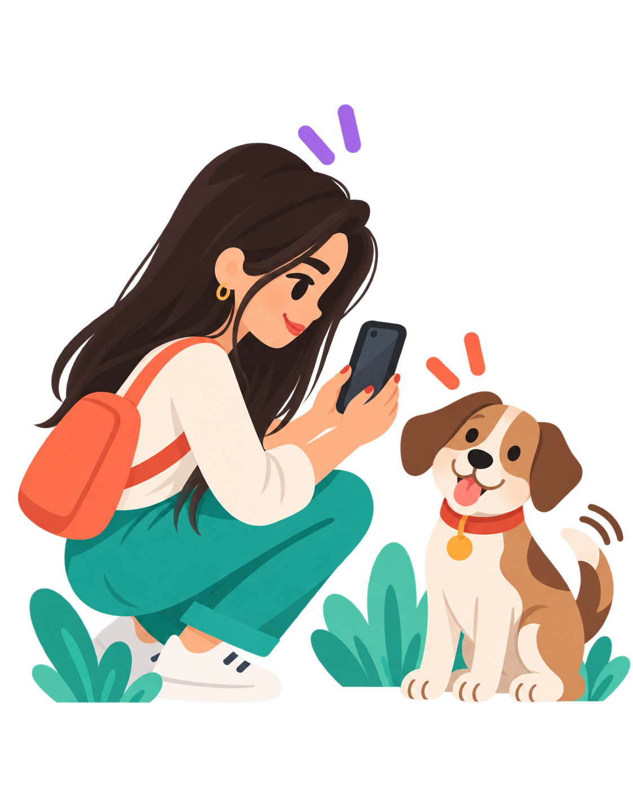
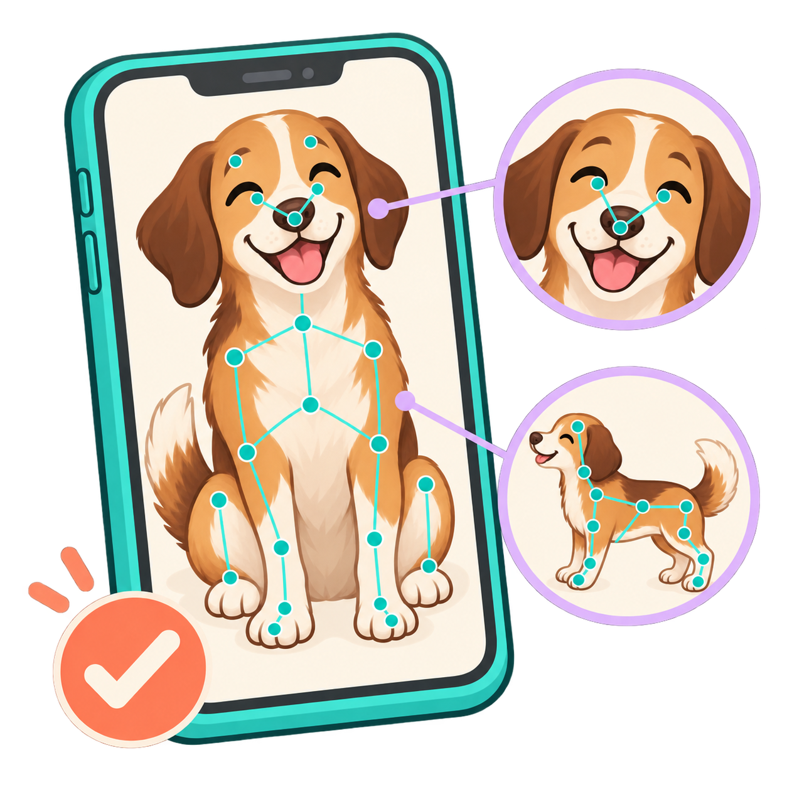
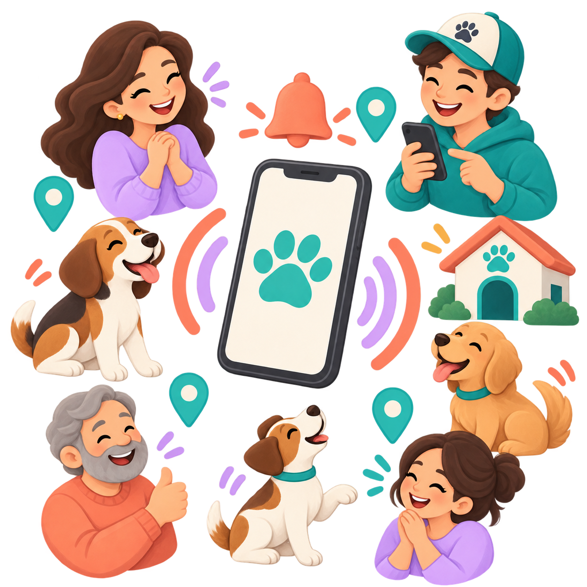
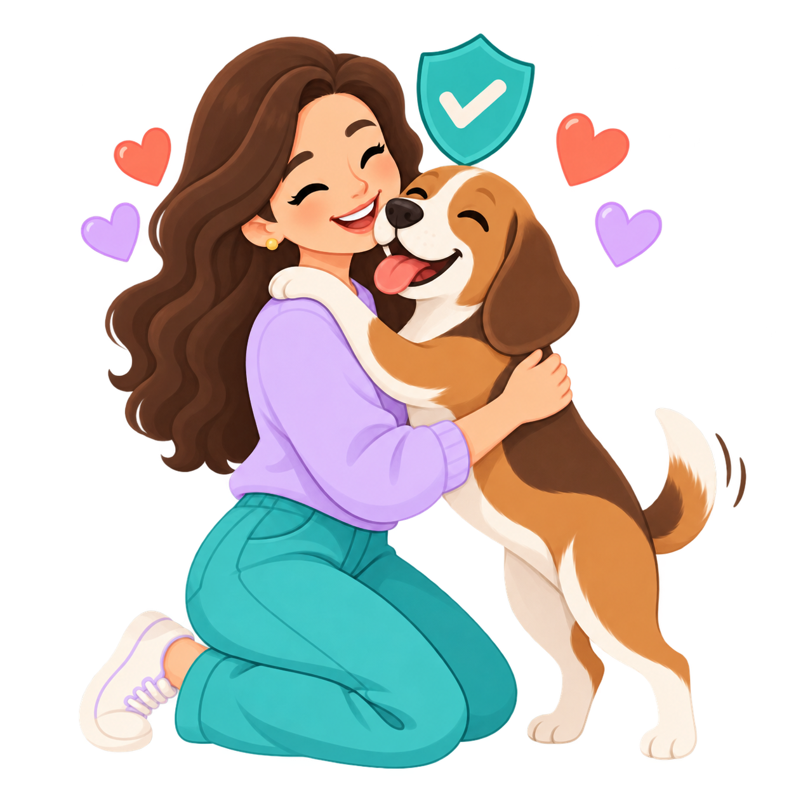
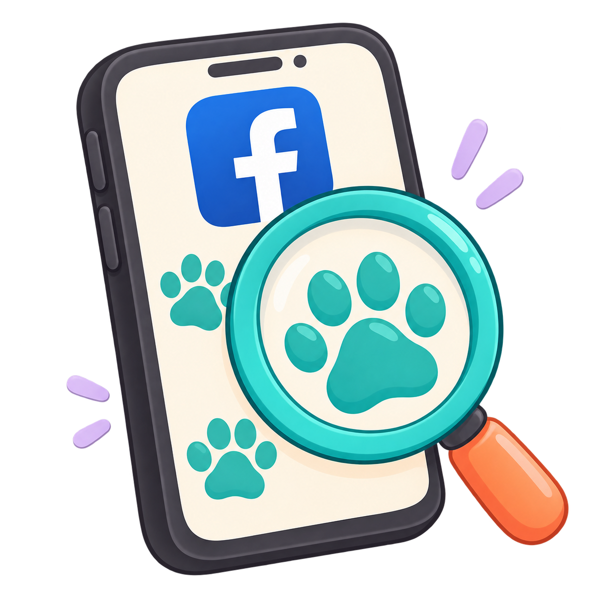
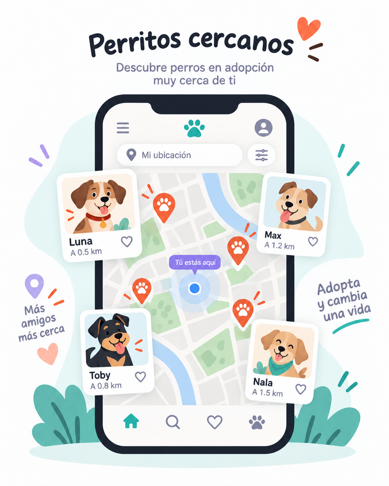
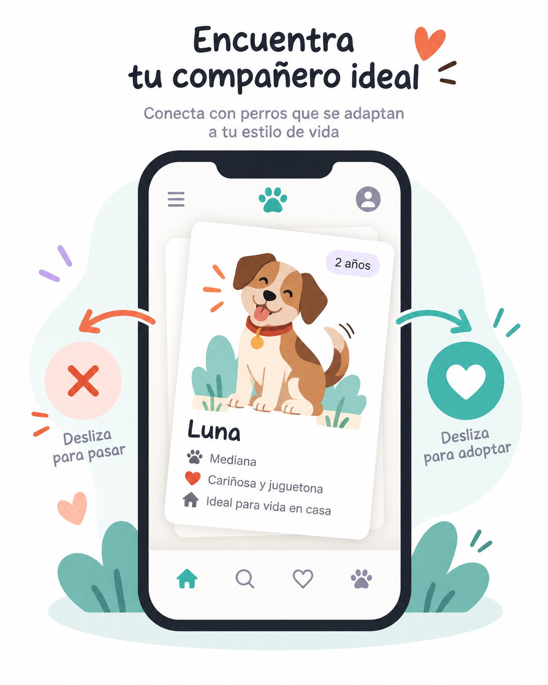
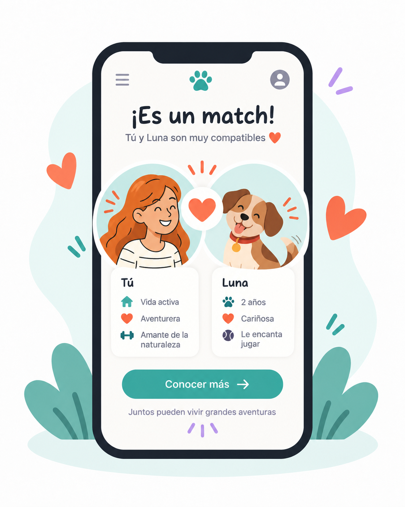
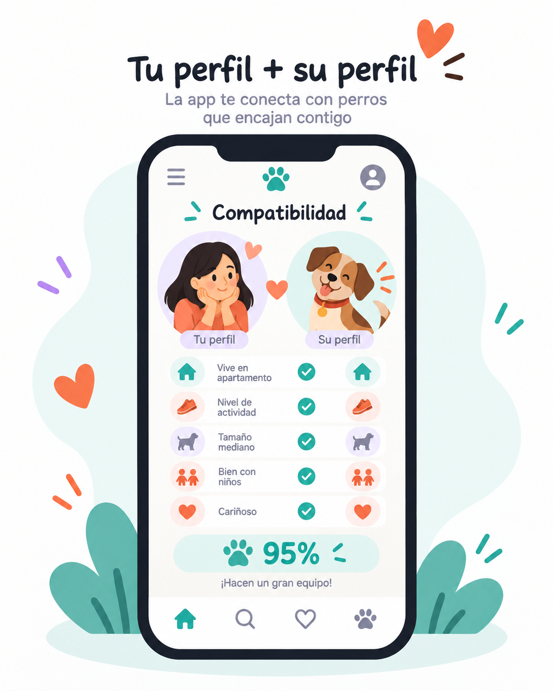
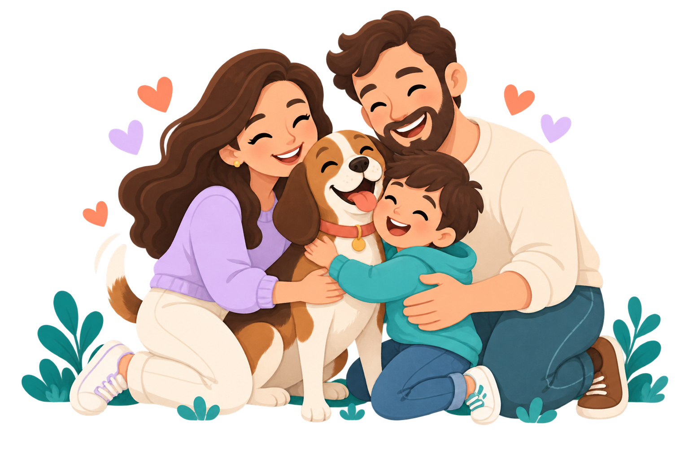

PatitasFind une inteligencia artificial, una comunidad de vecinos y rescatistas, y un bot de WhatsApp para reunir a los perritos perdidos con sus familias y encontrar hogar para los rescatados.

Súbele una foto, comparte la alerta y deja que la comunidad y la IA te ayuden a buscar.

La IA analiza raza, tamaño, colores y señas particulares para compararlo con reportes cercanos.

Publicamos en segundos y avisamos a vecinos, refugios y rescatistas cerca de ti.

Chatea de forma privada sin compartir tu teléfono y reúnanse en un lugar seguro.
Reunimos reportes de varios canales en un solo lugar y los comparamos entre sí para que ninguna pista se pierda.

Reporta desde WhatsApp con una foto y tu ubicación. Voluntarios suman publicaciones de redes sociales.
Cada reporte de perdido, encontrado y adopción se compara automáticamente con IA.

Ve en el mapa los reportes y perritos en adopción cerca de ti, con refugios aliados verificados.
Desliza perfiles como en una red social, pero con un propósito: conectar perros que necesitan hogar con personas que encajan con su personalidad.


Comparamos tu estilo de vida con el perfil del perro: espacio, actividad, experiencia y convivencia con niños u otras mascotas.
Cada adopción, donación o compra en la tienda solidaria beneficia a refugios verificados y los impulsa en el ranking de héroes.


Empieza ahora. Crea tu alerta, explora adopciones o apoya a un refugio.
Entrar a PatitasFind